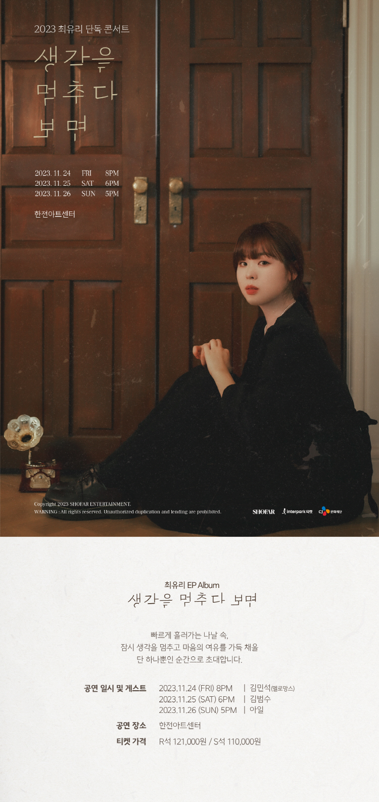

안녕하세요 라보엠입니다.
기온이 많이 떨어져서 몸도 마음도 벌써 지치네요. 정말 겨울이 온 것 같습니다. 이렇게 추워질 때는 마음이 따뜻해지는 노래가 절실하게 필요한데요, 따뜻한 숨을 불어넣어 주는 듯한 목소리로 노래하는 최유리의 새앨범 생각을 멈추다 보면이 나왔습니다.
최유리 생각을 멈추다 보면 - 단 하나
거의 모든 곡을 작사 작곡하는 싱어송라이터인 최유리는 이번 앨범에서도 6곡 모두를 작사, 작곡하고 직접 노래를 불렀습니다.
최유리 생각을 멈추다 보면 Release Note
멈춘 생각의 여유.
1. 생각을 멈추다 보면
생각을 멈추는 방법에 대해 무지했어요. 정말 간신히 조금이나마 생각을 멈췄을 때의 여유를 사랑해요.
Lyrics & Composed by 최유리
Arranged by 최유리, 문지혁
2. 단 하나
같은 것보다 다름이 더 많이 보이게 되는 삶 속에서 단 하나만 어울려도 살아갈 수 있을 용기와 의지를 주세요.
Lyrics & Composed by 최유리
Arranged by 최유리, 문지혁
3. 하늘 위
흔하지 않고 익숙하지 않은 하늘에서 날다 보면 꿈꾸는 것처럼 멍한 마음에 사랑을 바라볼 수 있지 않을까요?
Lyrics & Composed by 최유리
Arranged by 최유리, 문지혁
4. 사랑에게
사랑이 주는 힘, 무게 잡힌 ‘사랑’이라는 단어가 주는 힘을 믿어요.
Lyrics & Composed by 최유리
Arranged by 최유리, 문지혁
5. 회상
과거의 나에게, 부디 휘청이는 세상 속에서 겁 내지 않고 가질 수 있는 여유들을 잔뜩 찾았으면 좋겠어요. 결국은 이마저도 후회이겠지만요.
Lyrics & Composed by 최유리
Arranged by 최유리, 문지혁
6. 안녕이란 말 대신에
안녕이라는 단어는 참 예쁜 뜻을 가졌다고 해요. 어쩌면 우리 사이에 오고 가는 온도와 모든 것들이 ‘안녕’이라는 말을 대신할 수도 있었겠다는 생각이 드네요.
Lyrics & Composed by 최유리
Arranged by 최유리, 문지혁
[All Credit]
Executive Producer 신태권 for SHOFAR ENT.
Producer 최유리
Recorded by @TONE Studio
Mixed by 고현정 @koko sound, Dream Factory (1, 2, 3, 4)
김대성 @TONE Studio (5, 6)
Mastered by 권남우 @821 Sound
Music Video 류세이 @GRANbrew Studio
Video 조은하, 이한솔
Photography 조은하, 유화정
Album Design & Artwork 유화정
Management SHOFAR ENT.
Production Support by CJ Cultural Foundation.
최유리 - 단 하나 가사
1.
오늘 내 하루는 아쉽게도
온갖 어둠에 빛 한 줄기만 있는 날
다 지나간 하루
뭐를 어떡할 수도 없지 이런 나의
순간의 기쁨은 내 하루를
잠깐 행복에 젖게 만드니
그거면 됐다는 마음에
나는 어떡해서든 살아 이런 날엔
난 찰나의 순간에다 많은 무게를 달며
나의 날들이 꿈쩍도 않게 힘을 내고
일렁이는 그런 마음 신경 하나 안 쓴 채
살아가는 나의 순간에다
하나만 어울리면 그건 나를 살아가게 하는 거니까
우린 다시 꿈에서 만나 그때는 더 이상
순간에 망설이지도 겁을 내지도 않게
살아갈 수 있을 거라 믿어
2.
늘 여전한 나의 이 하루는
단 하나의 웃음을 남기고
집에 가는 길에 나 홀로
오늘 하루는 이상하게 괜찮은 것 같아
하나만 어울리면 그건 나를 살아가게 하는 거니까
우린 다시 꿈에서 만나 그때는 더 이상
순간에 망설이지도 겁을 내지도 않게
살아갈 수 있을 거라 믿어
하나만 어울리면 그건 나를 살아가게 하는 거니까
우린 다시 꿈에서 만나 그때는 더 이상
순간에 망설이지도 겁을 내지도 않게
살아갈 수 있을 거라 믿어
저는 이번 앨범중 타이틀곡 단 하나가 가장 좋아서 무한 반복해서 들었습니다.
단 하나의 웃음, 단 하나의 존재, 단 하나 찰라의 순간 하나면 이 세상을 살아갈 힘이 될거라는 최유리님의 삶의 철학이 담긴 가사와 그녀만의 독특한 음색의 목소리로 듣는 이에게 깊은 울림을 주며, 살아갈 용기와 함께 따뜻한 마음도 선물해주는 것 같습니다. 사실 아는 분들은 아시겠지만, 최유리의 노래들은 TV만 틀면 온갖 예능에서 시그널 뮤직으로 나오고 있습니다. 편안한 목소리와 노래에 담긴 메시지가 좋아서 많이 사용하는 것 같아요. 어제부터 단독 콘서트도 진행중인데 내년에는 기회가 되면 콘서트에도 가보고 싶습니다. 최유리님의 음악과 앞으로의 행보를 계속 응원하겠습니다.
2023 최유리 단독 콘서트 생각을 멈추다 보면
2023년 11월 24일(금) 한전아트센터에서 최유리의 단독 콘서트가 진행되었습니다.
인터파크 티켓
tickets.interpark.com
